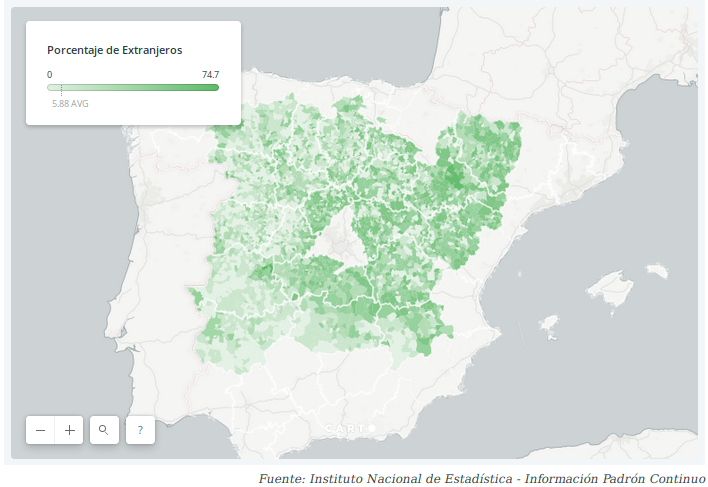

Si la población de la España interior y rural crece es gracias a ellos. En los últimos 20 años, más de
medio millón de extranjeros llegaron a las dos Castillas, Aragón, Extremadura y La Rioja. Este
es un proyecto sobre ellos y sobre sus vidas.
La población en la España Vacía ha crecido un 7% en los últimos veinte años, un crecimiento pequeño si se compara
con el resto del país, pero crecimiento al fin y al cabo. El dato más revelador es que la totalidad
de estos nuevos habitantes son personas que han nacido fuera de nuestro país, de hecho, durante esos mismos años el total
de la población nacional ha disminuido. ¿Cuántos son los nuevos habitantes de
la España Vacía? ¿En qué provincias su llegada ha supuesto la diferencia entre que la población crezca, se mantenga
o siga disminuyendo? ¿Cuáles son los principales países de origen de estos migrantes?
Nacidos en España | Nacidos en el extranjero
¿Quieres saber de dónde vienen tus vecinos?
Si vives en Castilla-La Mancha, Castilla-León, Extremadura, Aragón o La Rioja, escribe el nombre de tu
municipio y conoce el porcentaje de habitantes extranjeros que hay en tu pueblo por país de origen.
Entre las provincias de Segovia y Valladolid se extiende la zona de viveros de fresas más importante
de España. Miles de rumanos llegaron para la cosecha y terminaron quedándose.
La reconversión del cultivo del tabaco en los años 80 convirtió a Talayuela en dos pueblos, el
de los españoles y el de los marroquíes que llegaron a trabajar. Veinte años después, esos
dos pueblos siguen sin ser uno.
La comarca de las Tierras Altas de Soria es una zona incomunicada y con más pueblos deshabitados
que habitados. Los extranjeros son clave para su superviviencia.
La llegada de inmigrantes ha favorecido la repoblación de las zonas rurales. Para que esta tendencia
continúe es necesario favorecer condiciones que permitan a las personas llevar una buena vida.
¿Dónde están?
Los nuevos habitantes no se han instalado de forma homogénea en la España Vacía. Hay diferencias importantes
entre unas regiones y otras.
